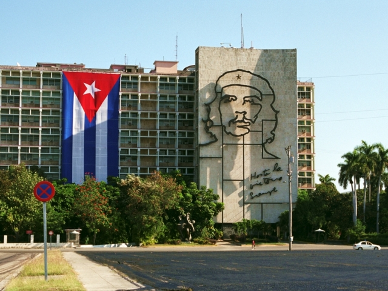
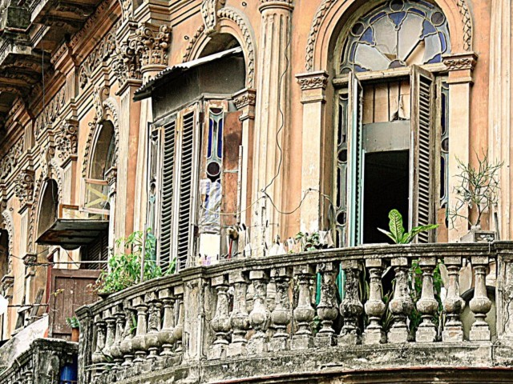
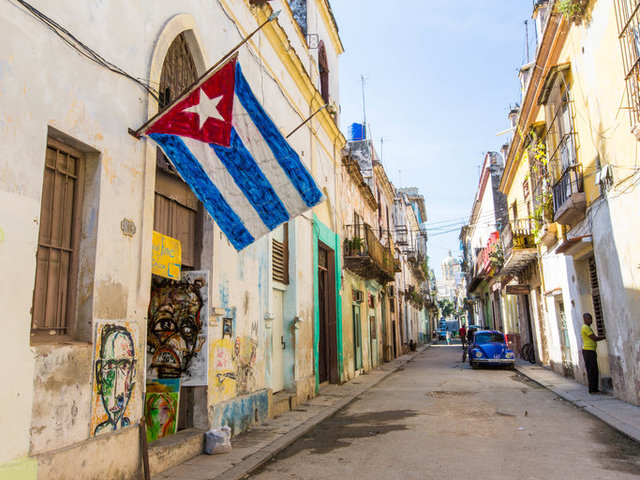
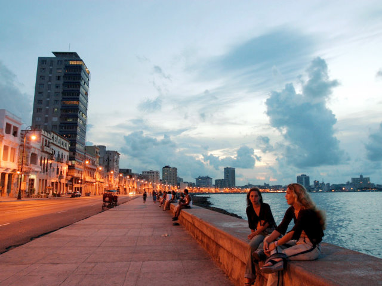

ГАВАНА
Гава́на (исп. La Habana [aβana] — Абана, полностью San Cristóbal de La Habana) — столица и крупнейший город Республики Куба, политический, экономический и культурный центр страны, административный центр провинции Гавана. Площадь большой Гаваны составляет 726,75 км², город поделён на 15 муниципалитетов.
Гавану основали испанские поселенцы 16 сентября 1519 года[2]. До завоевания острова испанцами на этом месте жили индейцы (в частности сибонеи и таино), однако жестокий гнёт поработителей, болезни и голод привели к почти полному уничтожению коренного населения. Недостаток рабочей силы в городе испанские завоеватели восполняли неграми-рабами, которые уже в начале XVII века были значительной частью населения Гаваны[3].
Гавана находится на северо-западе острова Куба, на берегу Мексиканского залива. Город раскинулся в живописном месте вблизи бухт Гавана и Сан-Лисаро. Природные условия формируются под влиянием тропического муссонного климата. В январе средняя температура воздуха составляет +25 °С, в июле около +29 °С. Сухой сезон длится с ноября по апрель, а с мая по октябрь выпадают обильные дожди. Среднегодовая норма дождей составляет примерно 1500 мм.
Естественная растительность представлена различными видами пальм, пассифлорой, цитрусовыми, сандаловым деревом и др. Прибрежные воды Гаваны богаты рыбой. Всего здесь свыше 700 видов рыб и моллюсков. В городе и его окрестностях много различных насекомых, в том числе и опасных для человека, например песчаная блоха и малярийный комар. На востоке Гаваны находится курортная зона Санта-Мария, включающая в себя небольшие курортные городки, в частности Тарара и Гуанабо.
Климат Гаваны пассатный. Из-за влияния Карибского моря сезон дождей и сухой сезон в городе различимы слабо. Город также подвержен тропическим циклонам.
Гавану населяет 2 135 498 человек (2010). Доля столицы в общей численности населения Кубы — 21 %. Около семи из десяти жителей столицы являются потомками испанских переселенцев. Остальные имеют смешанное африкано-испанское или азиатское происхождение. Государственный язык — испанский. Более половины верующего населения Гаваны исповедуют католичество, часть жителей города придерживается синкретических верований, возникших на основе смешения христианства и ряда африканских языческих культов.
Гавана является одной из самых красивых островных столиц мира. Старый центр города до сих пор сохраняет свой самобытный колониальный облик. Здесь имеется ряд старинных архитектурных памятников, представляющих немалую историческую ценность. В 1984 г. достопримечательности столицы были внесены в Список мирового культурного наследия ЮНЕСКО. Среди них следует особо выделить крепость Ла-Реаль-Фуэрса (1583 г.), монастырь Санта-Клара (1644 г.), собор Непорочного Зачатия (1656 г.), городскую Ратушу (1792 г.), кафедральную площадь с собором, построенным в XVIII в. В центре расположена площадь с мемориальным комплексом имени Хосе Марти. Один из главных архитектурных памятников — бульвар Прадо, дома построены в староиспанском стиле. Здесь находится здание Национального Капитолия, построенного в 1920-х гг. по образцу здания в Вашингтоне, а также Большой театр Гаваны.
В последние годы проводились работы по реставрации архитектурных памятников города. Целью реставраторов являлось восстановление первоначального облика старинных произведений зодчества и скульптуры. Огромное культурное значение для столицы имела реставрация сооружений на Старой площади Гаваны.
Гавана знаменита на весь мир своими шумными и многолюдными праздниками, фестивалями и ярмарками, в феврале в городе проходят красочный карнавал и Международный фестиваль Джаза. В декабре в столице проходит ежегодный Фестиваль латиноамериканского кино, а 1 января Гавана отмечает национальный праздник — День Революции, который сопровождается праздничными мероприятиями, выступлениями музыкантов и танцоров.